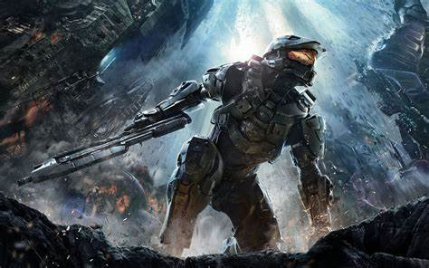

Cuestionario
#1 -Ingrese el nombre del cuarto planeta del sistema solar
Esta pregunta es requerida
#2 ¿La tierra es el tercer planeta del sistema solar?
Verdadero
Falso
Esta pregunta es requerida
#3 Objeto astronómico con una fuerza gravitacional tan fuerte que nada, ni siquiera la luz, puede escapar de él.
Seleccione una opción
Andromeda
Agujero negro
Orion
Esta pregunta es requerida
#4 ¿De que otra forma se hacía referencia al tartaro?(Escoja dos opciones)
Hades
Olimpo
Erebo
Infratierra
Lugar Caido
Esta pregunta es requerida
#5 ¿Quién era considerada la diosa de la sabiduría en la Antigua Grecia?
Seleccione una opción
Hera
Atenea
Hestia
Romia
Nemesis
Hebe
Afrodita
Esta pregunta es requerida
Culminar Evaluación
Resultado

Respuestas del Cuestionario